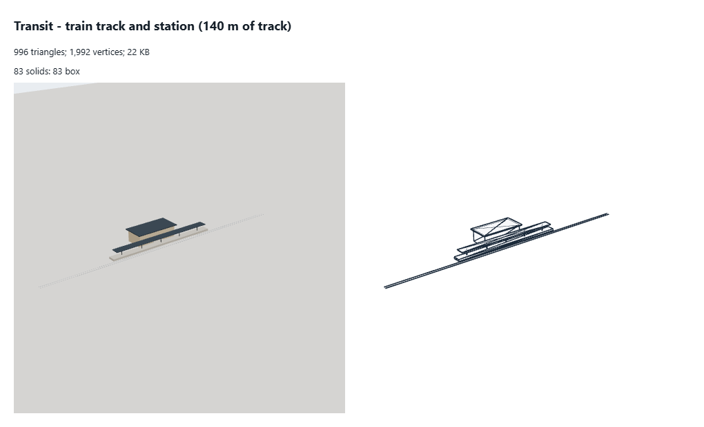

train track and station 140 m of track
What to change
- Budget: about 400 triangles (996 today, 2.5 times the budget): boxes; sleepers and rails as one textured strip.
- No level of detail: add ~50% levels (meshoptimizer simplify, weld first) and an impostor or nothing past a few pixels.
- 64 bytes a vertex: quantize (position 3 x int16, normal as 2 x int8 octahedral, colour 4 x uint8): about 12-16 bytes (KHR_mesh_quantization).
- Triangles
- 996
- Vertices
- 1,992
- Levels
- L0 996
- Memory
- 22 KB (geometry 22 KB, textures 0 KB)
- Per vertex
- 64 B: position:3xFloat32=12B normal:3xFloat32=12B uv:2xFloat32=8B instancePoseA:4xFloat32=16B instancePoseB:4xFloat32=16B
- Drawn as
- instanced
- Material
- MeshStandardMaterial [onBeforeCompile() {}|pose-yaw] (roughness 0.35, metalness 0.8, opacity 1) | MeshStandardMaterial [onBeforeCompile() {}|pose-yaw] (roughness 0.9, metalness 0, opacity 1) | MeshStandardMaterial [onBeforeCompile() {}|pose-yaw] (roughness 0.6, metalness 0.2, opacity 1) | MeshStandardMaterial [onBeforeCompile() {}|pose-yaw] (roughness 0.5, metalness 0.6, opacity 1) | MeshStandardMaterial [onBeforeCompile() {}|pose-yaw] (transparent, roughness 0.1, metalness 0.1, opacity 0.45) | MeshStandardMaterial [onBeforeCompile() {}|pose-yaw] (roughness 0.5, metalness 0, opacity 1) | MeshStandardMaterial [onBeforeCompile() {}|pose-yaw] (roughness 0.85, metalness 0, opacity 1)
- Shader
- patched built-in onBeforeCompile() {}|pose-yaw
- Solids
- 83 solids: 83 box
- Hidden triangles
- 0
- Shadow
- -
- Source
src/render/transit.ts (createTransit, sync)(kit)